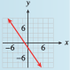

Subsection 6.2 Slope-Intercept Method of Graphing
Look again at the lines in the previous figure: There is only one line that has a given slope and passes through a particular point. That is, the values of \(m\) and \(b\) determine the particular line. The value of \(b\) gives us a starting point, and the value of \(m\) tells us which direction to go to plot a second point. Thus, we can graph a line given in slope-intercept form without having to make a table of values.
Example 6.2.4.
- Write the equation \(4x - 3y = 6\) in slope-intercept form.
- Graph the line by hand.
- We solve the equation for \(y\) in terms of \(x\text{.}\)\begin{equation*} \begin{aligned}[t] -3y \amp =6 - 4x \amp \amp \blert{\text{Divide both sides by } -3}\\ y \amp = \frac{6 - 4x}{-3}=\frac{6}{-3}+\frac{-4x}{-3}\\ y \amp = -2+\frac{4}{3}x \end{aligned} \end{equation*}
- We see that the slope of the line is \(m = \dfrac{4}{3}\) and its \(y\)-intercept is \(b = -2\text{.}\) We begin by plotting the \(y\)-intercept, \((0, -2)\text{.}\) We then use the slope to find another point on the line. We have\begin{equation*} m = \frac{\Delta y}{\Delta x}=\frac{4}{3} \end{equation*}so starting at \((0, -2)\text{,}\) we move \(4\) units in the \(y\)-direction and \(3\) units in the \(x\)-direction, to arrive at the point \((3, 2)\text{.}\) Finally, we draw the line through these two points.

Note 6.2.5.
The slope of a line is a ratio and can be written in many equivalent ways. In Example 6.2.4, the slope is equal to \(\dfrac{8}{6}\text{,}\) \(\dfrac{12}{9}\text{,}\) and \(\dfrac{-4}{-3}\text{.}\) We can use any of these fractions to locate a third point on the line as a check. If we use \(m = \dfrac{\Delta y}{\Delta x}= \dfrac{-4}{-3}\text{,}\) we move down \(4\) units and left \(3\) units from the \(y\)-intercept to find the point \((-3, -6)\) on the line.
Slope-Intercept Method for Graphing a Line.
Plot the \(y\)-intercept \((0, b)\text{.}\)
Use the definition of slope to find a second point on the line: Starting at the \(y\)-intercept, move \(\Delta y\) units in the \(y\)-direction and \(\Delta x\) units in the \(x\)-direction. Plot a second point at this location.
Use an equivalent form of the slope to find a third point, and draw a line through the points.

Checkpoint 6.2.6.
Write the equation \(2y + 3x + 4 = 0\) in slope-intercept form.
Use the slope-intercept method to graph the line.
\(y=-2-\dfrac{3}{2}x \)
- 